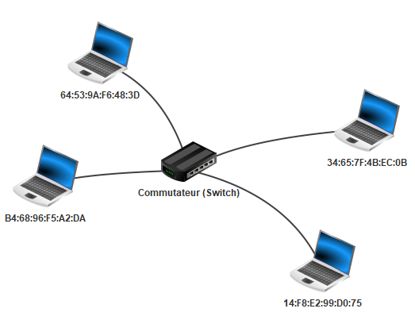
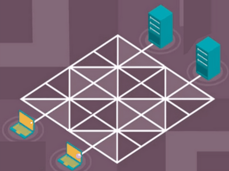

Principe des réseaux
I. Introduction
Considérons une action banale : la navigation sur un site Web. Par exemple, nous souhaitons accéder au site : https://fr.wikipedia.org/wiki/Informatique
Lorsque nous cliquons sur le lien, la page wikipédia s'affiche à l'écran.
A partir de cette simple manipulation, nous pouvons déjà faire quelques observations :
-
La page qui vient de s'afficher ne se trouve pas en réalité sur notre ordinateur, mais sur une autre machine appellée serveur (Le serveur héberge ce site web). Il y a donc eu une communication entre notre machine et le serveur pour récupérer les données du site.
-
Deuxièmement, notre machine n'est pas reliée directement au serveur : il n'y a pas de câble reliant directement notre ordinateur au serveur.
-
Troisièmement, si nous répétons l'expérience depuis des lieux différents avec des machines différentes, la page web s'affiche pareillement.
Comment notre machine communique t-elle sur le réseau informatique ?
Comment les données sont-elles transmises depuis une machine source vers une machine de destination ?
II. Généralités
a) Définitions
Un réseau informatique est un ensemble de noeuds (équipements informatiques) reliés entre eux par des liens.
Les réseaux informatiques permettent l'échange de données entre les machines au moyen de protocoles.
Un protocole est un ensemble de règles permettant de standartiser la communication.
b) Modèles en couches
Dans l'objectif de décrire le fonctionnement d'un réseau informatique, les informaticiens ont proposé dans les années 1980 deux modèles :

Ces modèles présentent les réseaux sous la forme d'un ensemble de couches superposées.
Chaque couche est définie par plusieurs protocoles permettant la transmission des données d'un certain niveau.
Par exemple, la couche Accès réseau du modèle TCP/IP définit les protocoles s'occupant de transmettre les données au niveau d'un réseau local.
Chaque couche est indépendante des autres et communique uniquement avec une couche adjacente.
Les couches "hautes" gèrent plutôt la partie logicielle de la transmission de données tandis que les couches "basses" gèrent la partie physique.
Le modèle TCP/IP étant plus proche de la réalité, c'est ce modèle que nous utiliserons pour la suite de la leçon.
c) Types de réseaux
-
Les LAN (pour Local Area Network) sont des réseaux locaux personnels, internes aux entreprises ou aux écoles.
-
Les MAN (pour Metropolitan Area Network) sont des réseaux de réseaux locaux interconnectés et ont généralement la taille d'une ville.
-
Internet est l'ensemble des réseaux mondiaux interconnectés.
III. Couche 1 : Accès réseau
Ici, dans la couche n°\(1\) du modèle TCP/IP, toutes les machines sont reliées directement en réseau local.
Il peut s'agir d'un réseau Wi-Fi ou d'un réseau câblé utilisant le protocole Ethernet.
a) Adresses MAC
Dans un réseau local, les machines sont distinguées par leur adresse MAC.
Une adresse MAC est l'adresse physique unique de la machine.
L'adresse MAC d'une machine est découpée en six octets représentés traditionnellement en hexadécimal : 98:f3:96:d1:26:a8.
Dans la représentation d'une adresse MAC, les octets sont séparés par des ':'
b) Représentation d'un réseau local

Ci-dessus, une représentation d'un réseau local. Chaque machine possède son adresse MAC et sont reliés par un équipement informatique appelé commutateur (Switch en anglais).
Le commutateur, lorsqu'il reçoit des données sur lesquelles est précisé l'adresse MAC de destination, va les transmettre à la machine concernée.
Il existe un autre équipement, plus ancien, appelé Concentrateur (Hub en anglais) qui lui envoie les données à toutes les machines du réseau local.
Application 1
La transmission de données à l'intérieur d'un réseau local peut être assimilée à la situation suivante :
Un colis est arrivé par voie postale dans la boîte aux lettres de votre maison.
Pour savoir à qui est destiné le colis parmi toutes les personnes qui habitent au même endroit : on regarde le nom auquel est adressé le colis.
Relier les éléments selon la correspondance de leur mission :
Boîte aux lettres - - Réseau local
Colis - - Données
Nom/prénom - - Commutateur
Maison - - Adresse MAC
IV. Couche 2 : Internet
Imaginons désormais qu'une machine d'un premier sous-réseau local souhaite communiquer avec une machine d'un autre sous-réseau local.
Pour la suite de ce chapitre, nous utiliserons le schéma suivant représentant un réseau constitué de trois sous-réseaux locaux interconnectés :

a) Protocole IP
Le protocole IP pour Internet Protocol de la couche Internet permet de faire communiquer efficacement deux machines appartenant à des réseaux différents.
Pour cela, le protocole IP remplit trois missions :
-
Sa première mission consiste à associer une adresse IP pour chaque machine.
-
La seconde consiste à découper les données en paquets IP.
-
Enfin, la dernière mission est d'acheminer ces paquets.
b) Adresses IP
Une adresse IP est un identifiant de réseau associée à une machine.
Une adresse IP est constituée d'un identifiant réseau et d'un identifiant machine précisant respectivement l'identité du réseau et l'identité de la machine.
Elle est représentée sur trente-deux bits (IPv4) soit quatre octets et est usuellement notée en décimale.
Les octets étant séparés par des points : 192.168.2.1.
En représentation binaire : 11000000.10101000.00000010.00000001
Les adresses IP de version six (IPv6) sont représentées sur cent vingt-huit bits.
c) Masque de sous-réseau
Le masque de sous-réseau, représenté sur quatre octets, permet de retrouver l'identifiant réseau et l'identifiant machine d'une adresse IP.
Le masque est constitué d'une suite de bits à 1 (représentant l'identifiant réseau) suivie d'une suite de bits à 0 (représentant l'identifiant machine).
Par exemple, un masque de sous-réseau valide est 255.255.255.0 parce que son écriture binaire (: 11111111.11111111.11111111.00000000) est une suite de bits à 1 suivie d'une suite de bits à 0.
Cela veut dire, que les vingt-quatre premiers bits de l'adresse IP sont alloués à l'identifiant réseau et les huit bits restants sont alloués à l'identifiant machine.
En reprenant l'adresse IP 192.168.2.1 avec un masque de sous-réseau 255.255.255.0 :
-
L'identifiant réseau est :
11000000.10101000.00000010.xxxxxxxx -
L'identifiant machine est :
xxxxxxxx.xxxxxxxx.xxxxxxxx.00000001
Application 2
Pour chacun des adresses IP et masques suivants, retrouver l'identifiant réseau et l'identifiant machine :
-
IP :
192.166.0.254; Masque :255.255.255.0 -
IP :
192.168.0.2; Masque :255.255.254.0 -
IP :
192.168.1.6; Masque :255.255.254.0
d) Adressage des machines

e) Adresse réseau
Pour différencier les sous-réseaux entre eux, on leur attribue à eux aussi une adresse : l'adresse réseau.
L'adresse réseau est la première adresse IP disponible du réseau : son identifiant machine vaut \(0\).
Elle sert à identifier un réseau et donc à les distinguer.
Par exemple, l'adresse réseau du sous-réseau n°1 est 192.168.1.0.
Application 3
Donner l'adresse réseau du sous-réseau n°0 et vérifier qu'il ne s'agit pas, en effet, du sous-réseau n°1.
f) Appartenance d'une machine à un réseau
Il arrive souvent que nous nous demandons si telle machine appartienne à tel réseau.
Pour obtenir l'adresse réseau du réseau dans lequel est présente une machine, il suffit de réaliser l'opération \(ET\) bit à bit entre l'adresse IP de la machine et son masque :
11000000.10101000.00000010.00000001 -> 192.168.2.1
& 11111111.11111111.11111111.00000000 -> 255.255.255.0
___________________________________
= 11000000.10101000.00000010.00000000 -> 192.168.2.0
Grâce à cette opération, je sais que la machine d'adresse IP 192.168.2.1 appartient au sous-réseau d'adresse réseau 192.168.2.0 soit le sous-réseau n°2.
Application 4
Avec le masque suivant : 255.255.255.0, donner :
a) L'adresse réseau de la machine d'adresse IP 192.168.0.2.
b) L'adresse réseau de la machine d'adresse IP 192.168.1.1.
c) Expliquer pourquoi ces deux machines n'appartiennent pas au même réseau.
g) Adresses IP réservées
-
L'adresse réseau ne peut pas être donnée comme adresse IP à une machine.
-
L'adresse de Broadcast, ayant tous les bits de l'identifiant machine à \(1\), ne peut également pas être donnée à une machine.
h) Nombre d'adresses disponibles
Soit \(n\) le nombre de bits alloués à l'identifiant machine. Soit \(p\) le nombre d'adresses déjà utilisées.
Il est possible de connaître le nombre d'adresses encore disponibles dans un réseau en calculant \(2^{n}-p-2\).
Application 5
En reprenant le schéma, combien de machines je peux encore mettre dans :
a) Mon sous-réseau n°0 d'adresse réseau192.168.0.0 ?
b) Mon sous-réseau n°1 d'adresse réseau 192.168.1.0 ?
i) Découpage en paquets IP
La seconde mission du protocole IP est le découpage en paquets IP.
Internet est un endroit où chaque utilisateur peut envoyer des données.
Il arrive que ces données soient trop lourdes et cela a pour conséquence de surcharger le réseau et d'empêcher l'acheminement des données d'autres utilisateurs :

Pour y remédier, le protocole IP "découpe" les données en paquets IP. Chaque paquet est ensuite envoyé sur le réseau puis les données sont reconstituées sur la machine de destination :
Application 6
Par deux, découper une image en quatre bandes. Puis, à la façon du protocole IP, envoyer une par une les bandes à votre voisin qui devra reconstituer l'image.
a) Comment reconstituer l'image s'il en manque une ?
b) Comment reconstituer l'image si le destinataire les reçoit dans le désordre ?
j) Routage
La dernière mission du protocole IP est le routage des paquets.
Sur le schéma, les trois sous-réseaux locaux sont connectés par le Routeur A.
Le travail d'un Routeur est d'assurer le routage (la redirection) des paquets vers le bon réseau.
Pour cela, le routeur, lorsqu'il recevra un paquet sur lequel est inscrit l'adresse IP de destination, devra rediriger ce paquet vers le réseau associé à cette adresse.
La notion de routage, étant au programme de Terminale, sera enrichie ultérieurement.
V. Couche 3 : Transport
Les protocoles TCP pour Transmission Control Protocol et UDP pour User Datagram Protocol appartiennent tous les deux à la troisième couche du modèle TCP/UDP : la couche Transport.
En regardant d'un peu plus près le découpage en paquets effectués par le protocole IP, on remarque quelques soucis.
En effet, les paquets envoyés à priori dans l'ordre peuvent emprunter des chemins différents sur le réseau et par conséquent peuvent arriver dans le mauvais ordre à destination.
De plus, un paquet peut se "perdre" sur le réseau et peut ne jamais arriver à destination.
a) Protocole TCP
Le protocole TCP permet, par une mise en place d'un système d'accusés de réception, de remettre dans l'ordre les paquets reçus et de réémettre les paquets perdus.
Ce protocole est constitué de trois phases :
-
Etablissement d'une session de connexion afin de synchroniser l'émetteur et le récepteur pour l'échange de données qui suit.
-
Les paquets sont numérotés puis envoyés et un accusé de réception est attendu pour chacun d'entre eux.
-
Arrêt de la session.
b) Etablissement d'une session de connexion TCP
L'établissement d'une session de connexion entre deux machines se réalise à l'aide de l'algorithme des trois poignées de mains (Three-way Handshake en anglais).
sequenceDiagram
autonumber
192.168.0.1->>192.168.2.1: SYN Je veux communiquer, êtes vous disponible ?
Note right of 192.168.2.1: Accusé de reception
192.168.2.1->>192.168.0.1: SYN-ACK Je peux communiquer, êtes vous prêts ?
Note left of 192.168.0.1: Accusé de reception, connexion établie
192.168.0.1->>192.168.2.1: ACK Je suis prêt !
Note right of 192.168.2.1: Connexion établie
-
SYN (Synchronized) : Synchronisation
-
ACK (Acknowledgement) : Accusé de réception
c) Transfert des paquets IP avec TCP
Les données étant trop lourdes, le protocole IP a découpé les données en deux paquets IP respectivement de numéro \(100\) et \(200\).
Lors d'une situation sans problème :
sequenceDiagram
autonumber
192.168.0.1->>192.168.2.1: Envoi du paquet n°100
192.168.0.1->>192.168.2.1: Envoi du paquet n°200
192.168.2.1->>192.168.0.1: Envoi de l'accusé de reception n°101
192.168.2.1->>192.168.0.1: Envoi de l'accusé de reception n°102
Les accusés de reception permettent le réenvoi des paquets perdus.
Le numéro des paquets permettent de les assembler dans le bon ordre lors de leur reception.
d) Protocole UDP
Le protocole TCP est efficace pour assurer l'arrivée des données, il est utilisé généralement lorsque l'on veut absolument que les données arrivent à destination : par exemple, lors de l'envoi d'un mail.
L'inconvénient d'un tel protocole est la surcharge toujours plus conséquente de paquets sur la ligne.
C'est pourquoi le protocole UDP existe, il arrive parfois que l'arrivée de toutes les données ne soit pas nécessaire : par exemple, lors d'un visionnage d'une vidéo en direct (streaming).
Le protocole UDP n'utilise pas les accusés de réception et ne surcharge pas le réseau.
Si un paquet est perdu, cela n'a pas de conséquence et le visionnage peut continuer avec les paquets suivants.
VI. Encapsulation des données
En descendant les couches, les données sont encapsulées. C'est à dire que chaque couche ajoute de l'information à ce qui va être envoyé :

-
La couche Transport ajoute aux données une en-tête TCP. On y retrouve les ports source et de destination, ces ports indiquent quelle application utiliser avec quel protocole (TCP ou UDP). Cela forme un Segment TCP.
-
A ce segment, la couche Internet y ajoute l'en-tête IP. On y retrouve les adresses IP des machines source et de destination. Cela forme un Paquet IP.
-
Enfin, la couche Accès réseau ajoute au paquet IP l'en-tête Ethernet. On y retrouve les adresses MAC des machines source et de destination. Cela forme une Trame Ethernet.